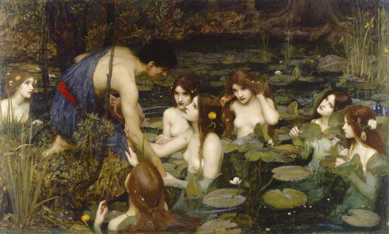

作品名 「ヒュラスとニンフたち」
花言葉 「清らかな心」「雄弁」「神聖」「沈着」「沈着」
白い蓮
「清らかな心」
蓮は泥水の中で育ち、泥水が濃ければ濃いほど美しくきれいな花を咲かせると言われます。泥水（苦境）の中からでも気高く綺麗な花を咲かすことから「清らかな心」という花言葉が付けられたとされています。また仏教では、生まれたばかりの釈迦が歩き出し、彼が地面につけた足跡から蓮の花が咲いた。という話があり、仏教で蓮は「神聖」なものとされてきました。
ヒュラスとニンフたち
ジョン・ウィリアム・
ウォーターハウス
ジョン・ウィリアム・ウォーターハウスが1896年に完成させた絵画である。ギリシャ神話に登場する美しい青年ヒュラスが水の精に拉致される瞬間を描いている。ヒュラスについては色んな説はあるが、英雄ヘラクレスに愛された美少年という説や実の息子であったという説もある。絵の中では、数人の裸のニンフに囲まれたヒュラスが、手を伸ばして彼を掴み、水中世界へと引きずり込もうとしている。ニンフとは男を誘惑して水に引き込む水の魔物でもある。水辺を背景にした緑豊かな風景の中で、色彩と光によって夢のようなロマンチックな雰囲気が演出されている。ヘラクレスと水は関係が深い英雄のように思われる。白いハスは水と死の象徴として、ヘラクレスの冒険を彩っている。この絵はウォーターハウスの代表作のひとつとされており、古典神話への憧れ、女性の美と官能への憧れが反映されている。
| 作品名 | ヒュラスとニンフたち |
| 作者 | ジョン・ウィリアム・ウォーターハウス |
| 制作年 | 1896年 |
| 種類 | キャンバス・油彩 |
| 寸法 | 163.3cm × 98.2cm |
| 所蔵 | マンチェスター市立美術館 |